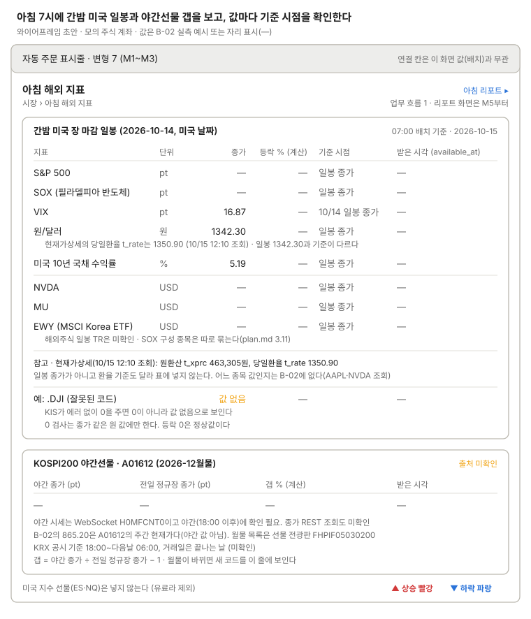

아침 해외 지표
미국 장 마감 뒤의 일봉 종가와 야간선물 갭으로 그날 국내 매수 판단의 입력을 보여 준다.

위 표에 간밤 미국 장 마감 일봉(지수·환율·금리·종목별 행)을 모으고 아래 카드에 KOSPI200 야간선물의 전일 정규장 종가 대비 갭을 두며, 값마다 받은 시각을 붙이며 0 응답은 "값 없음"으로 보인다. 현재가상세 값(463,305원, 당일환율 1350.90)은 10/15 12:10 조회값이라 일봉 표 밖에 참고로 둔다.
쓰는 공통 UI
화면 틀 · 자동 주문 표시줄 (변형 7. 연결 칸은 이 화면의 배치 값과 무관)
상태
| 상태 | 보일 것 |
|---|---|
| 07:00 전 접속 | 어제 표를 그대로, 카드 머리의 배치 기준 날짜를 강조 |
| 불러오는 중 | 표 자리에 불러오는 중, 값은 "—" |
| 미국 휴장일 | 전 거래일 값, 기준 시점의 날짜를 강조하고 "휴장" 표시 |
| 07:00 배치 실패·미실행 | 카드 위 경고 띠와 마지막 성공 배치 시각. 표는 마지막 성공 값 |
| 일부 지표 실패 | 그 행만 실패 표시와 "—", 다른 행은 그대로 |
| 0 응답(잘못된 코드) | 원 값 칸에 "값 없음" |
| 야간선물 미수신·월물 바뀜 | 야간선물 카드에 "받기 전" 또는 새 월물 코드와 안내 |
| 서머타임 전후 | 미국 마감 시각(KST 05:00/06:00)을 기준 시점에 밝힌다 |
화면 규칙
- 보여 줄 것: S&P 500, SOX, VIX, 원/달러, 미국 10년 국채, 종목별 행(NVDA, MU, EWY: 등락 %와 달러 일봉 종가. 참고: 원환산 가격
t_xprc), KOSPI200 야간선물 종가와 전일 정규장 종가 대비 갭(우리 계산), 월물 코드 - 데이터:
inquire-daily-chartprice(지수·VIXN, 환율X, 금리I), 해외 현재가상세HHDFS76200200 - 야간선물: 출처 미확인. 야간 시세는 WebSocket
H0MFCNT0이고 야간에 확인하지 못했고, 종가 REST 조회도 미확인이다. B-02의 865.20은A01612(2026-12월물)의 주간 현재가다 - 등락 %는 전일 종가로 우리가 계산한 값으로 표시한다(제안). 0 → "값 없음" 검사는 종가 같은 원 값에만 한다(등락 0은 정상값)
- 가정: 야간선물은 KRX 공시 기준 18:00~다음날 06:00(미확인). 거래일은 끝나는 날
- 주의: 미국 지수 선물(ES·NQ)은 없다(유료라 제외). 잘못된 코드는 0값이 오므로 0은 "값 없음"으로 보인다. 값마다 받은 시각(
available_at)을 보인다